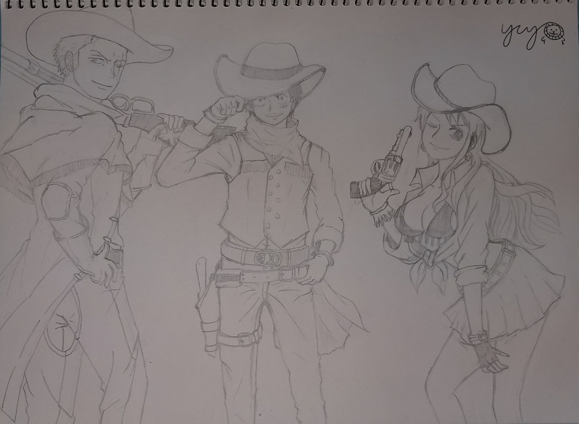
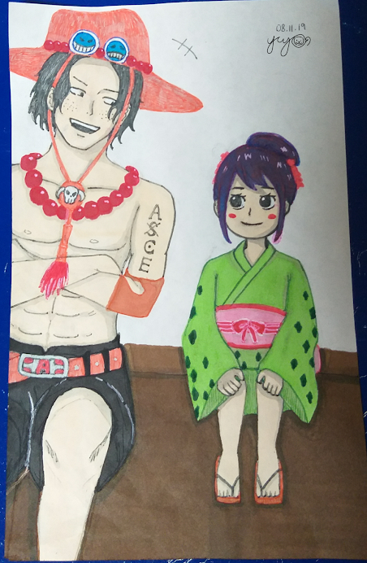

My top hobby: drawing!
My artwork in 2019
The arts might be a little informal because drawing funny or cute pictures always make me feel happy. Therefore I tend to draw more pictures like this. Here are my top3 drawing picture in 2019. All of them are one piece characters since it's really entertaining to draw whatever I like.

Luffy, Zoro & Nami in cowboy style

Sanji & his older sister, Reiju in knight style

Ace sharing his adventures with O-tama
My artwork in 2020
Additionally, these are my top3 picture I drew in 2020!

A crying cheems

Tonkatsu(Fried Pork Cutlet) & Ebifurai no Shippo(Leftover Tail of Fried Shrimp) at school

Tiny bear and the Insta-style drink
A project that I did in fall20 for my ITS101 class: StonyScape
ITS 101 is a course intro to SBU (ITS stands for Info Tech Studies), and as the final group project for the fall semester, we had to identify an aspect of the SBU community that needs improvement and then address it by proposing a new technology.
Therefore, me and my groupmates decided the aspect that needed improvement is ways that allows students get in touch(such as people wanting to find a roommate or study buddy for same courses before new semester comes). came to a solution of a technology: StonyScape(Stony Brook + landscape), a website that is especially dedicated for Freshmen to allow them connecting with each other virtually.